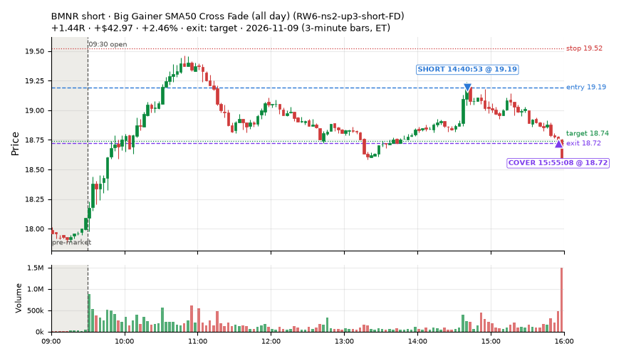
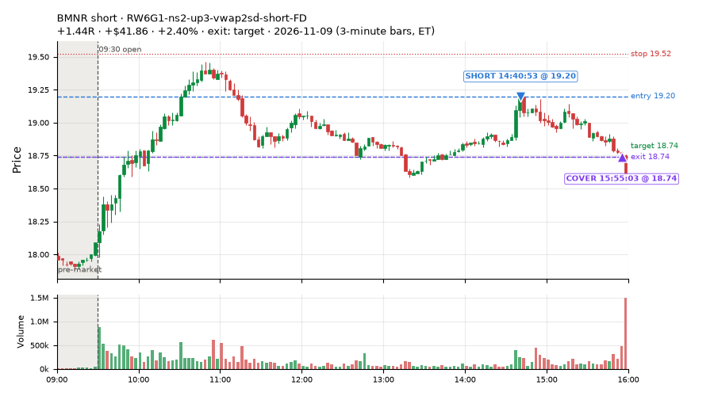
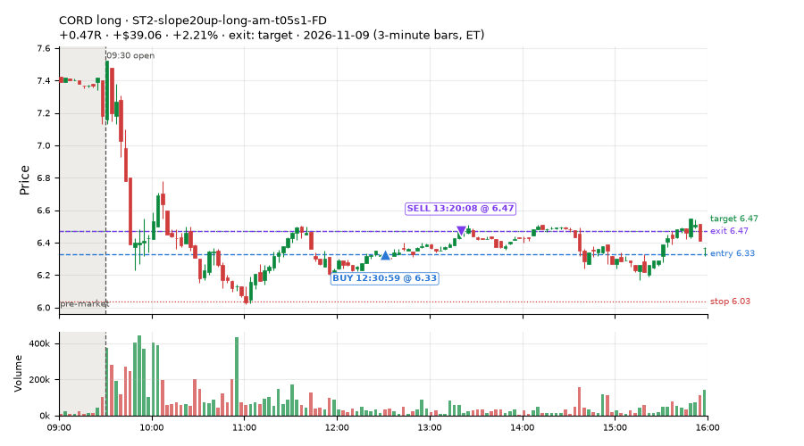
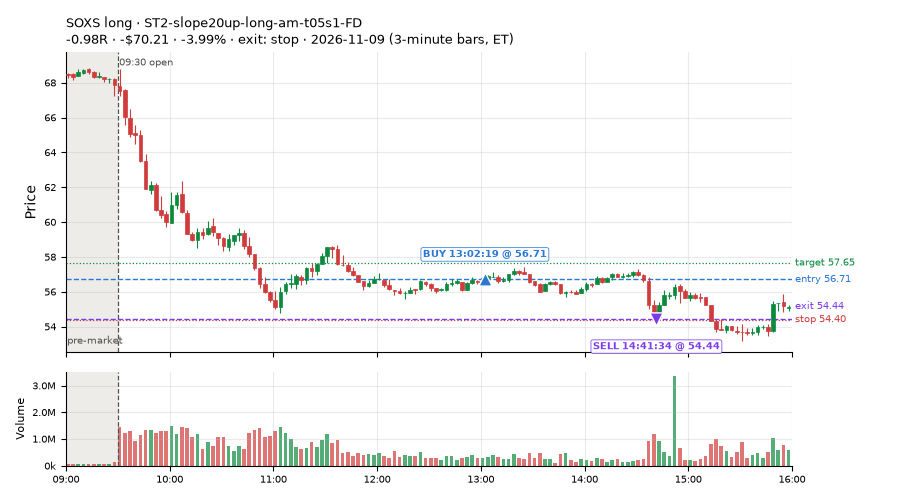
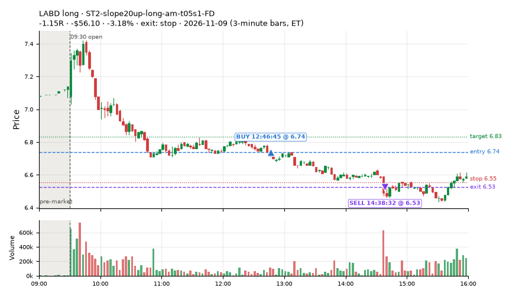
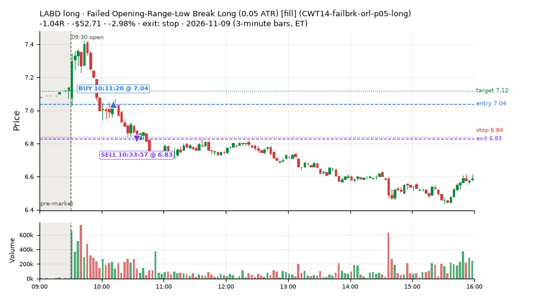
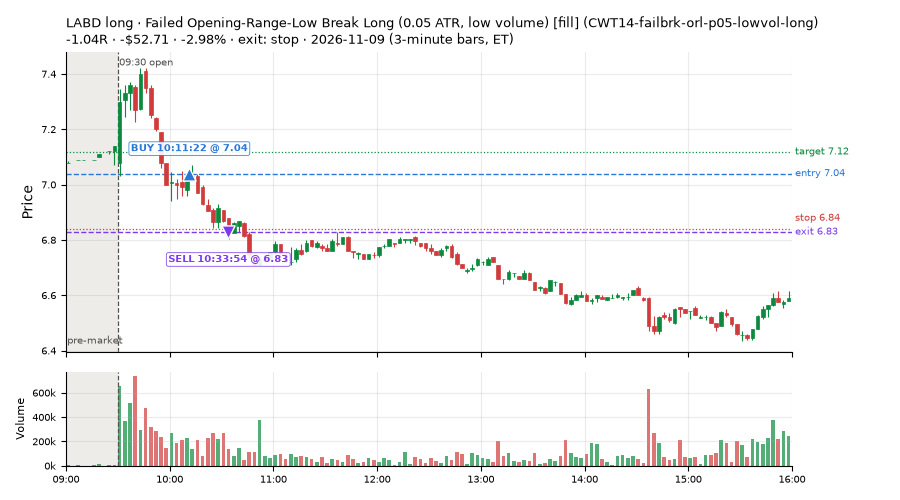
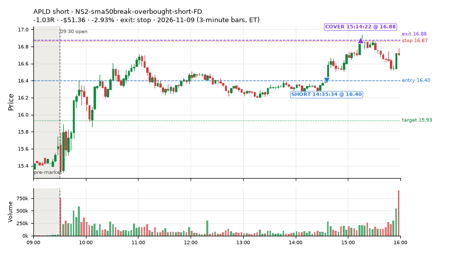

512 trades · win rate 54% · P/L $-528.13
PROBATION: no live setup has passed both locked test periods. 10 owner-directed setups added 2026-10-08 (MarcoFlow top 5 + 5 new), untested live. RW6G1 (RW6 + VWAP band guard) added 2026-10-09, probation.

| Symbol | Setup | Side | In | Out | Entry | Exit | Exit reason | % gained | P/L |
|---|---|---|---|---|---|---|---|---|---|
| BMNR | Big Gainer SMA50 Cross Fade (all day) (RW6-ns2-up3-short-FD) | short | 14:40 | 15:55 | 19.19 | 18.72 | target | +2.46% | $42.97 |
| BMNR | RW6G1-ns2-up3-vwap2sd-short-FD | short | 14:40 | 15:55 | 19.20 | 18.74 | target | +2.40% | $41.86 |
| CORD | ST2-slope20up-long-am-t05s1-FD | long | 12:30 | 13:20 | 6.33 | 6.47 | target | +2.21% | $39.06 |
| Symbol | Setup | Side | In | Out | Entry | Exit | Exit reason | % lost | P/L |
|---|---|---|---|---|---|---|---|---|---|
| SOXS | ST2-slope20up-long-am-t05s1-FD | long | 13:02 | 14:41 | 56.71 | 54.44 | stop | -3.99% | $-70.21 |
| LABD | ST2-slope20up-long-am-t05s1-FD | long | 12:46 | 14:38 | 6.74 | 6.53 | stop | -3.18% | $-56.10 |
| LABD | CWT14-failbrk-orl-p05-long | long | 10:11 | 10:33 | 7.04 | 6.83 | stop | -2.98% | $-52.71 |
| LABD | CWT14-failbrk-orl-p05-lowvol-long | long | 10:11 | 10:33 | 7.04 | 6.83 | stop | -2.98% | $-52.71 |
| APLD | NS2-sma50break-overbought-short-FD | short | 14:35 | 15:14 | 16.40 | 16.88 | stop | -2.93% | $-51.36 |








Signal to fill: median 2s, 90th percentile 4s (512 trades). Bars close each minute; the order follows the bar close.
Best excursion (MFE): median 0.41R; worst (MAE) median 0.60R. 30% of trades never got +0.25R in our favour; 9 reached +1R and still closed at or below 0.
| Symbol | Setup | Best R | Worst R | Closed R |
|---|---|---|---|---|
| CPRT | CWT14-failbrk-pdh-p10-short | +1.67 | -1.09 | -1.01 |
| NVDA | CWT09-gapdn-vwaploss-g5-short | +1.63 | -1.28 | -0.78 |
| ECL | heat_fade_short | +1.30 | -1.10 | -1.04 |
| PDBC | CWT14-failbrk-orl-p05-long | +0.76 | -2.08 | -1.52 |
| IYR | CWT14-failbrk-pdh-p10-short | +1.33 | -0.99 | -0.95 |
| Entry time | Trades | Win | Avg R | P/L |
|---|---|---|---|---|
| 09:50-10:30 | 210 | 46% | -0.35 | $-634.84 |
| 10:30-11:30 | 133 | 63% | +0.07 | $128.91 |
| 11:30-13:00 | 69 | 68% | +0.05 | $82.63 |
| 13:00-14:00 | 11 | 45% | -0.04 | $-79.43 |
| 14:00-16:00 | 89 | 52% | -0.05 | $-25.40 |
| Setup | Trades | Win | Avg R | Adj R (net of SPY) | Avg R ex-market (all sessions) | P/L |
|---|---|---|---|---|---|---|
| Gap-Down VWAP Loss Short (5% gap) (CWT09-gapdn-vwaploss-g5-short) | 4.0 | 0% | -0.81 | -0.90 | -0.23 (beta -3.12, n 74) | $-42.16 |
| Coil Under the High (4 bars) (CWT12-coil-k4-long) | 45.0 | 87% | +0.24 | -0.08 | -0.01 (beta +0.81, n 291) | $212.30 |
| Coil Under the High (6 bars) (CWT12-coil-k6-long) | 17.0 | 76% | +0.99 | +0.37 | +0.02 (beta +1.35, n 116) | $136.18 |
| Stretched Above VWAP Fade (CWT13-vwapstretch-z05-short) | 7.0 | 14% | -0.75 | -0.17 | +0.00 (beta -0.65, n 112) | $-30.63 |
| Failed Opening-Range-Low Break Long (0.05 ATR) [fill] (CWT14-failbrk-orl-p05-long) | 49.0 | 80% | +0.19 | -0.02 | -0.13 (beta +0.96, n 594) | $179.48 |
| Failed Opening-Range-Low Break Long (0.05 ATR, low volume) [fill] (CWT14-failbrk-orl-p05-lowvol-long) | 38.0 | 84% | +0.25 | +0.04 | -0.11 (beta +0.82, n 497) | $112.09 |
| Failed Opening-Range-Low Break Long (0.1 ATR) [fill] (CWT14-failbrk-orl-p10-long) | 17.0 | 76% | +0.14 | -0.05 | -0.12 (beta +1.00, n 350) | $33.91 |
| Failed Opening-Range-Low Break Long (low volume) (CWT14-failbrk-orl-p10-lowvol-long) | 16.0 | 81% | +0.21 | +0.01 | -0.06 (beta +1.00, n 379) | $57.19 |
| Failed Prior-Day-High Break Short (0.05 ATR, low volume) [fill] (CWT14-failbrk-pdh-p05-lowvol-short) | 35.0 | 49% | -0.32 | -0.09 | -0.12 (beta -1.30, n 241) | $-168.88 |
| Failed Prior-Day-High Break Short (low volume) (CWT14-failbrk-pdh-p10-lowvol-short) | 14.0 | 29% | -0.72 | -0.46 | -0.18 (beta -1.34, n 128) | $-146.54 |
| Failed Prior-Day-High Break Short (0.1 ATR) [fill] (CWT14-failbrk-pdh-p10-short) | 10.0 | 20% | -0.77 | -0.44 | -0.18 (beta -1.29, n 231) | $-106.21 |
| Failed Prior-Day-Low Break Long (shallow) (CWT14-failbrk-pdl-p05-long) | 36.0 | 86% | +0.28 | +0.03 | -0.01 (beta +0.81, n 193) | $211.42 |
| Failed Prior-Day-Low Break Long (0.05 ATR, low volume) [fill] (CWT14-failbrk-pdl-p05-lowvol-long) | 18.0 | 89% | +0.20 | +0.02 | -0.07 (beta +1.50, n 178) | $57.75 |
| Opening-Range Low Sweep Reversal (LIQ-orl-sweep-open15-s25-long) | 1.0 | 100% | +0.08 | -0.44 | -0.12 (beta -0.08, n 154) | $1.38 |
| MF1-945-flowsell-vwapup-FD | 7.0 | 0% | -1.04 | -0.28 | -0.09 (beta -2.40, n 70) | $-18.32 |
| Early Sellers into a Pop (all day) (MF3-open-flowsell-rsi5hi-FD) | 20.0 | 10% | -0.87 | -0.07 | -0.15 (beta -1.67, n 70) | $-109.63 |
| MF5-flowsell-vwapup-rsi5hi-FD | 18.0 | 11% | -0.85 | +0.04 | +0.01 (beta -2.13, n 38) | $-89.91 |
| NS2-sma50break-overbought-short-FD | 26.0 | 35% | -0.22 | -0.09 | -0.15 (beta -0.87, n 109) | $-122.31 |
| Big Loser VWAP Reclaim Fade (all day) (NS3-failed-vwap-reclaim-short-FD) | 4.0 | 0% | -0.62 | -0.55 | -0.31 (beta -0.70, n 63) | $-63.85 |
| NS5-sma50-flush-oversold-long-FD | 2.0 | 50% | -0.56 | -0.49 | +0.08 (beta +1.61, n 17) | $-14.05 |
| RW2-exhaustion-noon-adv150-short-FD | 18.0 | 11% | -0.80 | -0.26 | -0.35 (beta -1.04, n 275) | $-231.91 |
| RW4-ns3-adv150-short-FD | 2.0 | 0% | -0.66 | -0.62 | -0.20 (beta -0.43, n 56) | $-33.20 |
| Big Gainer SMA50 Cross Fade (all day) (RW6-ns2-up3-short-FD) | 26.0 | 62% | +0.10 | +0.08 | -0.06 (beta -1.86, n 59) | $55.36 |
| RW6G1-ns2-up3-vwap2sd-short-FD | 18.0 | 67% | +0.23 | +0.19 | +0.13 (beta -0.35, n 21) | $105.89 |
| ST1-ordn-long-pm-t05s1-FD | 1.0 | 0% | -0.96 | -0.98 | -0.07 (beta +1.49, n 30) | $-12.81 |
| ST2-slope20up-long-am-t05s1-FD | 10.0 | 50% | -0.25 | -0.35 | -0.04 (beta +0.79, n 175) | $-93.48 |
| Midday Gap-Up Dip Buy (heat_fade_long) failed Apr-Jun holdout: -0.138R/trade over 1043 trades | 3.0 | 67% | +0.19 | +0.01 | +0.23 (beta +1.88, n 97) | $18.33 |
| heat_fade_long-FD | 3.0 | 67% | +0.14 | -0.16 | -0.21 (beta +1.30, n 93) | $26.12 |
| Morning Bounce Fade (heat_fade_short) failed Apr-Jun holdout: -0.015R/trade over 1420 trades | 21.0 | 14% | -0.64 | -0.05 | -0.15 (beta -1.04, n 187) | $-200.62 |
| heat_fade_short-FD | 26.0 | 8% | -0.73 | -0.34 | -0.20 (beta -1.56, n 325) | $-251.02 |
Market direction (SPY, beta 1) accounted for $-212.25 of today's $-528.13; the rest ($-315.88) came from the setups themselves. Avg R net of SPY: -0.08 (incl. a hedge leg's cost; report only).
33 setups live today. Today: 1509 signals, 512 taken, 77 lost because another setup held the symbol (5%). Since 2026-10-21 (14 sessions): 15495 signals, 5350 taken, 813 lost to other setups (5%). Peak open positions today 178 of 200 slots. Earnings blackout removed 1439 symbols before scanning.
Simulated playing time (not live): 10102 what-if trades of signals not taken, avg -0.05R, 56% winners; of them 812 lost to another setup (avg -0.07R).
Crowded out: NS2-sma50break-overbought-short, heat_fade_short-FD · Starved: MF1-945-flowsell-vwapup-FD, heat_fade_long, heat_fade_long-FD
| Prio | Setup | Today sig / taken | Sessions | Signals / taken / trades | Taken/day | Expected/day | Lost to other setups | Lost to (setup n) | Top skip reasons | SIMULATED: not-taken n / avg R / win | Verdict |
|---|---|---|---|---|---|---|---|---|---|---|---|
| 1 | ST1-ordn-long-pm-t05s1-FD ST1-ordn-long-pm-t05s1-FD | 1 / 1 | 14 | 42 / 30 / 30 | 2.14 | 3.49 | 0 | – | spread / quote / size 10, broker rejected 1, other 1 | 12 / -0.35R / 33% | slow 10.7 entries/week; ~6 weeks to 60 trades |
| 2 | Big Gainer SMA50 Cross Fade (all day) RW6-ns2-up3-short-FD | 55 / 26 | 14 | 145 / 59 / 59 | 4.21 | 7.12 | 7 | CWT12-coil-k4-long 3, RW6-ns2-up3-short-FD 2, NS2-sma50break-overbought-short-FD 2 | not shortable / shorts off 43, per-setup cap 18, daily loss cap 12 | 86 / +0.32R / 74% | ok 21.1 entries/week |
| 3 | NS2-sma50break-overbought-short-FD NS2-sma50break-overbought-short-FD | 77 / 26 | 14 | 267 / 109 / 109 | 7.79 | 17.08 | 10 | CWT12-coil-k4-long 7, CWT12-coil-k6-long 2, LIQ-orl-sweep-open15-s25-long 1 | per-setup cap 42, not shortable / shorts off 40, daily loss cap 39 | 158 / +0.23R / 70% | ok 38.9 entries/week |
| 4 | Big Gainer Average Reclaim Fade NS2-sma50break-overbought-short | 0 / 0 | 14 | 94 / 8 / 8 | 0.57 | 5.74 | 54 | NS2-sma50break-overbought-short-FD 45, RW6-ns2-up3-short-FD 11, CWT12-coil-k4-long 6 | symbol held by another setup 54, spread / quote / size 15, not shortable / shorts off 11 | 86 / +0.14R / 63% | crowded-out 54 of 94 signals (57%) lost to setups already holding the symbol |
| 5 | MF1-945-flowsell-vwapup-FD MF1-945-flowsell-vwapup-FD | 53 / 7 | 14 | 220 / 70 / 70 | 5.00 | 23.94 | 3 | CWT12-coil-k6-long 1, CWT14-failbrk-orl-p05-long 1, CWT12-coil-k4-long 1 | daily loss cap 88, spread / quote / size 46, not shortable / shorts off 12 | 150 / -0.26R / 33% | starved 5.00 entries/day vs ~23.94 expected |
| 6 | ST2-slope20up-long-am-t05s1-FD ST2-slope20up-long-am-t05s1-FD | 11 / 10 | 14 | 500 / 175 / 175 | 12.50 | 24.03 | 24 | heat_fade_short-FD 10, CWT09-gapdn-bounce-g5-lowerhalf-short 5, NS3-failed-vwap-reclaim-short-FD 3 | daily loss cap 219, spread / quote / size 41, per-setup cap 37 | 322 / -0.06R / 61% | ok 62.5 entries/week |
| 7 | Midday Gap-Up Dip Buy heat_fade_long | 4 / 3 | 14 | 162 / 97 / 97 | 6.93 | 30.36 | 17 | heat_fade_long-FD 9, NS3-failed-vwap-reclaim-short-FD 3, RW4-ns3-adv150-short-FD 3 | spread / quote / size 22, symbol held by another setup 17, daily loss cap 15 | 65 / -0.23R / 43% | starved 6.93 entries/day vs ~30.36 expected |
| 8 | Opening-Range Low Sweep Reversal LIQ-orl-sweep-open15-s25-long | 5 / 1 | 14 | 304 / 154 / 154 | 11.00 | – | 15 | CWT14-failbrk-orl-p10-long 13, CWT14-failbrk-orl-p05-lowvol-long 12, CWT14-failbrk-orl-p10-lowvol-long 11 | per-setup cap 57, daily loss cap 45, spread / quote / size 25 | 150 / -0.04R / 43% | ok 55.0 entries/week |
| 9 | RW2-exhaustion-noon-adv150-short-FD RW2-exhaustion-noon-adv150-short-FD | 127 / 18 | 14 | 718 / 275 / 275 | 19.64 | 50.34 | 14 | CWT12-coil-k4-long 5, CWT12-coil-k6-long 3, NS3-failed-vwap-reclaim-short-FD 3 | daily loss cap 244, not shortable / shorts off 75, spread / quote / size 69 | 443 / -0.12R / 46% | ok 98.2 entries/week |
| 10 | heat_fade_long-FD heat_fade_long-FD | 7 / 3 | 14 | 308 / 93 / 93 | 6.64 | 51.74 | 46 | heat_fade_long 41, ST1-ordn-long-pm-t05s1-FD 2, heat_fade_short-FD 2 | daily loss cap 120, spread / quote / size 49, symbol held by another setup 46 | 215 / -0.15R / 45% | starved 6.64 entries/day vs ~51.74 expected |
| 11 | Failed Opening-Range-Low Break Long (low volume) CWT14-failbrk-orl-p10-lowvol-long | 31 / 16 | 14 | 702 / 379 / 379 | 27.07 | – | 7 | CWT14-failbrk-pdh-p05-lowvol-short 4, CWT14-failbrk-orl-p05-long 2, CWT14-failbrk-pdh-p10-short 2 | daily loss cap 145, spread / quote / size 121, per-setup cap 31 | 319 / -0.10R / 58% | ok 135.4 entries/week |
| 12 | Failed Opening-Range-Low Break Long (0.1 ATR) [fill] CWT14-failbrk-orl-p10-long | 37 / 17 | 14 | 826 / 350 / 350 | 25.00 | – | 12 | CWT14-failbrk-orl-p05-lowvol-long 8, CWT14-failbrk-orl-p05-long 8, CWT14-failbrk-orl-p10-lowvol-long 8 | daily loss cap 273, spread / quote / size 114, per-setup cap 53 | 471 / -0.13R / 59% | ok 125.0 entries/week |
| 13 | Morning Bounce Fade heat_fade_short | 34 / 21 | 14 | 362 / 187 / 187 | 13.36 | 31.76 | 1 | CWT14-failbrk-pdl-p05-lowvol-long 1 | spread / quote / size 102, daily loss cap 37, per-setup cap 22 | 175 / +0.17R / 59% | ok 66.8 entries/week |
| 14 | Failed Opening-Range-Low Break Long (0.05 ATR, low volume) [fill] CWT14-failbrk-orl-p05-lowvol-long | 69 / 38 | 14 | 1500 / 497 / 497 | 35.50 | – | 22 | CWT14-failbrk-orl-p10-lowvol-long 8, CWT14-failbrk-orl-p10-long 7, CWT14-failbrk-orl-p05-long 6 | daily loss cap 644, spread / quote / size 167, per-setup cap 138 | 998 / -0.12R / 60% | ok 177.5 entries/week |
| 15 | heat_fade_short-FD heat_fade_short-FD | 81 / 26 | 14 | 947 / 325 / 325 | 23.21 | 173.78 | 239 | heat_fade_short 188, LIQ-orl-sweep-open15-s25-long 14, CWT14-failbrk-orl-p05-long 9 | symbol held by another setup 239, daily loss cap 161, spread / quote / size 151 | 622 / +0.07R / 55% | crowded-out 239 of 947 signals (25%) lost to setups already holding the symbol |
| 16 | Failed Opening-Range-Low Break Long (0.05 ATR) [fill] CWT14-failbrk-orl-p05-long | 95 / 49 | 14 | 2045 / 594 / 594 | 42.43 | – | 138 | CWT14-failbrk-orl-p10-lowvol-long 112, CWT14-failbrk-orl-p10-long 111, CWT14-failbrk-orl-p05-lowvol-long 109 | daily loss cap 832, spread / quote / size 241, per-setup cap 199 | 1446 / -0.13R / 59% | ok 212.1 entries/week |
| 17 | Gap-Down Bounce Rejection Short (5% gap) CWT09-gapdn-bounce-g5-lowerhalf-short | 27 / 0 | 14 | 571 / 99 / 99 | 7.07 | – | 4 | CWT12-coil-k4-long 3, CWT12-coil-k6-long 1, CWT14-failbrk-orl-p05-long 1 | not shortable / shorts off 357, spread / quote / size 56, per-setup cap 32 | 470 / +0.22R / 58% | ok 35.4 entries/week |
| 18 | Failed Prior-Day-High Break Short (0.05 ATR, low volume) [fill] CWT14-failbrk-pdh-p05-lowvol-short | 69 / 35 | 13 | 724 / 241 / 241 | 18.54 | – | 8 | CWT14-failbrk-orl-p10-long 4, CWT14-failbrk-orl-p10-lowvol-long 3, CWT14-failbrk-orl-p05-long 3 | daily loss cap 286, spread / quote / size 140, not shortable / shorts off 39 | 483 / +0.00R / 65% | ok 92.7 entries/week |
| 19 | Failed Prior-Day-High Break Short (low volume) CWT14-failbrk-pdh-p10-lowvol-short | 29 / 14 | 13 | 313 / 128 / 128 | 9.85 | – | 4 | CWT14-failbrk-orl-p10-long 2, CWT14-failbrk-orl-p05-long 2, CWT12-coil-k4-long 1 | spread / quote / size 81, daily loss cap 78, not shortable / shorts off 15 | 185 / -0.03R / 63% | ok 49.2 entries/week |
| 20 | Failed Prior-Day-High Break Short (0.1 ATR) [fill] CWT14-failbrk-pdh-p10-short | 45 / 10 | 12 | 508 / 231 / 231 | 19.25 | – | 10 | CWT14-failbrk-orl-p10-long 4, CWT14-failbrk-pdh-p05-lowvol-short 3, CWT14-failbrk-pdh-p10-lowvol-short 3 | spread / quote / size 132, daily loss cap 82, not shortable / shorts off 33 | 276 / -0.04R / 62% | ok 96.2 entries/week |
| 21 | Stretched Above VWAP Fade CWT13-vwapstretch-z05-short | 40 / 7 | 12 | 293 / 112 / 112 | 9.33 | – | 3 | LIQ-orl-sweep-open15-s25-long 1, CWT12-coil-k4-long 1, CWT12-coil-k6-long 1 | daily loss cap 130, not shortable / shorts off 20, spread / quote / size 20 | 181 / -0.10R / 47% | ok 46.7 entries/week |
| 22 | Gap-Down VWAP Loss Short (5% gap) CWT09-gapdn-vwaploss-g5-short | 37 / 4 | 11 | 645 / 74 / 74 | 6.73 | – | 4 | CWT14-failbrk-orl-p05-long 2, CWT14-failbrk-orl-p05-lowvol-long 1, CWT14-failbrk-pdl-p05-long 1 | not shortable / shorts off 428, spread / quote / size 63, per-setup cap 54 | 563 / -0.16R / 39% | ok 33.6 entries/week |
| 23 | Coil Under the High (6 bars) CWT12-coil-k6-long | 109 / 17 | 10 | 417 / 116 / 116 | 11.60 | – | 23 | heat_fade_short 6, CWT14-failbrk-pdh-p10-short 5, RW2-exhaustion-noon-adv150-short-FD 4 | daily loss cap 144, spread / quote / size 93, broker rejected 40 | 301 / +0.10R / 44% | ok 58.0 entries/week |
| 24 | Coil Under the High (4 bars) CWT12-coil-k4-long | 244 / 45 | 8 | 841 / 291 / 291 | 36.38 | – | 37 | RW2-exhaustion-noon-adv150-short-FD 14, CWT14-failbrk-pdh-p05-lowvol-short 5, heat_fade_short 5 | per-setup cap 361, broker rejected 78, spread / quote / size 73 | 549 / -0.03R / 66% | ok 181.9 entries/week |
| 25 | Failed Prior-Day-Low Break Long (shallow) CWT14-failbrk-pdl-p05-long | 54 / 36 | 7 | 671 / 193 / 193 | 27.57 | – | 6 | CWT14-failbrk-orl-p10-lowvol-long 3, CWT14-failbrk-orl-p10-long 3, CWT14-failbrk-orl-p05-lowvol-long 3 | daily loss cap 367, spread / quote / size 93, broker rejected 8 | 473 / -0.12R / 57% | ok 137.9 entries/week |
| 26 | Failed Prior-Day-Low Break Long (0.05 ATR, low volume) [fill] CWT14-failbrk-pdl-p05-lowvol-long | 35 / 18 | 7 | 468 / 178 / 178 | 25.43 | – | 19 | CWT14-failbrk-orl-p05-lowvol-long 15, CWT14-failbrk-orl-p05-long 12, CWT14-failbrk-pdl-p05-long 9 | daily loss cap 157, spread / quote / size 93, broker rejected 21 | 286 / -0.14R / 56% | ok 127.1 entries/week |
| 27 | Big Loser VWAP Reclaim Fade (all day) NS3-failed-vwap-reclaim-short-FD | 16 / 4 | 6 | 341 / 63 / 63 | 10.50 | 22.02 | 32 | NS3-failed-vwap-reclaim-short-FD 10, RW4-ns3-adv150-short-FD 9, heat_fade_long 9 | daily loss cap 173, not shortable / shorts off 46, symbol held by another setup 32 | 278 / -0.09R / 46% | ok 52.5 entries/week |
| 28 | RW4-ns3-adv150-short-FD RW4-ns3-adv150-short-FD | 10 / 2 | 6 | 249 / 56 / 56 | 9.33 | 17.34 | 47 | NS3-failed-vwap-reclaim-short-FD 25, RW4-ns3-adv150-short-FD 23, heat_fade_long 10 | daily loss cap 101, symbol held by another setup 47, spread / quote / size 22 | 193 / -0.13R / 44% | ok 46.7 entries/week |
| 29 | Early Sellers into a Pop (all day) MF3-open-flowsell-rsi5hi-FD | 44 / 20 | 5 | 132 / 70 / 70 | 14.00 | 24.16 | 2 | ST2-slope20up-long-am-t05s1-FD 1, heat_fade_long 1 | daily loss cap 22, not shortable / shorts off 15, broker rejected 13 | 62 / +0.23R / 64% | ok 70.0 entries/week |
| 30 | MF5-flowsell-vwapup-rsi5hi-FD MF5-flowsell-vwapup-rsi5hi-FD | 36 / 18 | 5 | 75 / 38 / 38 | 7.60 | 15.47 | 0 | – | broker rejected 17, daily loss cap 15, spread / quote / size 5 | 37 / +0.10R / 62% | ok 38.0 entries/week |
| 31 | NS5-sma50-flush-oversold-long-FD NS5-sma50-flush-oversold-long-FD | 2 / 2 | 4 | 41 / 17 / 17 | 4.25 | 6.32 | 3 | NS3-failed-vwap-reclaim-short-FD 2, RW4-ns3-adv150-short-FD 2, ST4-emadn-long-am-t1s05-FD 1 | daily loss cap 14, spread / quote / size 4, symbol held by another setup 3 | 24 / +0.32R / 71% | ok 21.2 entries/week |
| 32 | ST4-emadn-long-am-t1s05-FD ST4-emadn-long-am-t1s05-FD | 0 / 0 | 4 | 27 / 20 / 20 | 5.00 | 2.77 | 1 | heat_fade_short-FD 1 | spread / quote / size 6, symbol held by another setup 1 | 7 / +0.17R / 43% | ok 25.0 entries/week |
| 33 | RW6G1-ns2-up3-vwap2sd-short-FD RW6G1-ns2-up3-vwap2sd-short-FD | 25 / 18 | 4 | 37 / 21 / 21 | 5.25 | 3.73 | 1 | RW6-ns2-up3-short-FD 1, NS2-sma50break-overbought-short-FD 1, RW6G1-ns2-up3-vwap2sd-short-FD 1 | not shortable / shorts off 13, spread / quote / size 2, symbol held by another setup 1 | 16 / +0.33R / 81% | ok 26.2 entries/week |
Every trade is attached as a CSV you can open and edit in Excel or Google Sheets. Live page: https://misiti15.github.io/MCF/live/